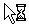
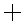
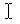
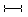
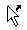
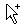
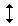
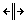

表2-1 CSS3的cursor属性的取值、含义及图例
| 属性值 | 含义 | 图例 |
|---|
| auto | 浏览器根据当前上下文，自动确定最适合的光标类型 |  |
| default | 使用客户端操作系统的默认光标 |  |
| none | 无光标 | |
| context-menu | 标示对象是上下文菜单 |  |
| help | 标示有帮助信息存在 |  |
| pointer | 竖起一只手指的手形光标 |  |
| progress | 标示程序忙，但用户仍然可以与程序交互 |  |
| wait | 标示程序忙，用户需要等待直到程序不忙为止 |  |
| cell | 标示对象是单元格 |  |
| crosshair | 简单的十字线光标 |  |
| text | 标示可编辑的水平文本 |  |
| vertical-text | 标示可编辑的垂直文本 |  |
| alias | 标示对象的别名 |  |
| copy | 标示对象可拷贝 |  |
| move | 标示对象可被移动 |  |
| no-drop | 标示被拖起的对象不允许在光标的当前位置被放下 | |
| not-allowed | 标示请求的操作不允许被执行 |  |
| grab | 标示对象可以被抓取 |  |
| grabbing | 标示对象正在被抓取 |  |
| e-resize | 标示对象可以向东改变尺寸 |  |
| n-resize | 标示对象可以向北改变尺寸 |  |
| ne-resize | 标示对象可以在东北方向改变尺寸 | |
| nw-resize | 标示对象可以在西北方向改变尺寸 |  |
| s-resize | 标示对象可以向南改变尺寸 |  |
| se-resize | 标示对象可以在东南方向改变尺寸 |  |
| sw-resize | 标示对象可以在西北方向改变尺寸 |  |
| w-resize | 标示对象可以被向西改变尺寸 |  |
| ew-resize | 标示对象可以被水平改变尺寸 |  |
| ns-resize | 标示对象可以被垂直改变尺寸 |  |
| nesw-resize | 标示对象可以在东北和西南方向改变尺寸 |  |
| nwse-resize | 标示对象可以在西北和东南方向改变尺寸 |  |
| col-resize | 标示对象可以被水平改变尺寸 |  |
| row-resize | 标示对象可以被垂直改变尺寸 |  |
| all-scroll | 标示对象允许向四个方向滚动 |  |
| zoom-in | 标示对象可以被放大 | |
| zoom-out | 标示对象可以被缩小 |  |